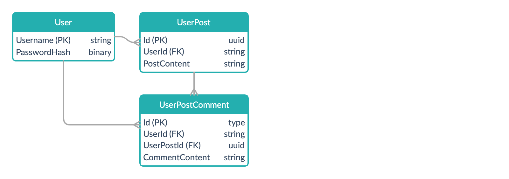
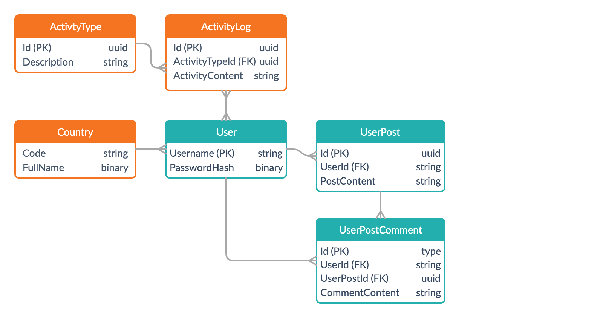
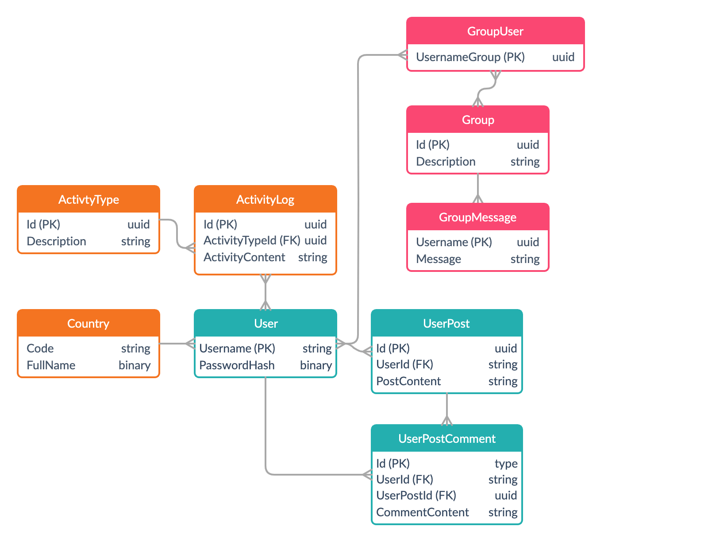

Since a single database server can support a considerable load, it’s worth starting by saying that the need to scale out your database server means your business is doing several things right, so this is a good problem to have. While getting a machine with more processor cores, memory and disk space can alleviate your problems in the short term, at some point needing to distribute your database across multiple machines becomes unavoidable (before considering scaling out, however, consider the fact that most databases are read-heavy meaning there are many more read operations than write operations and adding a caching layer can go a long way in improving performance — if this is not enough, secondary read replicas can be added to lessen the load in case of cache misses, but this also means there’s a small performance hit related to replication).
There are several ways to set up database scale-out.
-
Vertical. One approach to achieve scale-out is to have different tables from your schema reside on different machines. This is easy to implement in SQL Server because it is supported out of the box — distributed transactions across servers and hence referential integrity is also supported. This is also called functional partitioning because avoiding distributed joins is usually recommended, which means the split will be done according to how tables are related to one another.
-
Horizontal. Also called sharding. With horizontal scale-out all nodes in the cluster have the same schema, but the table rows are being partitioned across the different nodes, which means a partitioning strategy must be chosen for splitting the data. More on this later.
-
Mixed. This strategy involves a combination of both previous approaches. In some cases our domain model is not easily shardable across a single dimension and it becomes convenient to use both vertical and horizontal partitioning.
Since fairly straight forward to implement vertical scale-out, this approach will very likely the first attempt at improving performance to be implemented, but more often than not it’s just a temporary solution because just like with scaling up there quickly comes a point of diminishing returns. It can however provide some temporary relief while implementing a sharding approach.
Sharding Strategies
Probably the most ubiquitous sharding strategy is to use a tenant key and one of the simplest sharding strategies is to have one database per user. That’s however not tenable if you have hundreds of thousands of users because it would mean one VM per user.
-
Range. Sharding by range is probably the most simple way to implement horizontal partitioning and it means that each node in our cluster holds data associated with a certain range, for example data related to users. One drawback of that approach is that it doesn’t split data evenly.
-
Consistent hashing. An approach that was developed to solve the problems associated with sharding by range is to use some form of hash as the key and there are several approaches to ensuring this repartition is uniform, hence the name consistent. The problem with consistent caching is that while it does ensure you don’t have hotspots — the data might be spread evenly but utilization (or reads) of that data isn’t. Consistent hashing also makes the rebalancing of shards quite difficult.
-
Using a keymap. As the name suggests, this approach involves maintaining a list of keys-to-nodes mappings and it usually requires a different machine/database. Before querying data on a specific machine in the cluster, we first need to query the map, so this can add additional overhead.
We’ll mostly be looking at this approach from now on.
A Real World Example
Let’s imagine we’re building a social media application where users can create posts on their profile and comment on other users’ posts. The most natural strategy for splitting our data would be to do it by how that particular data is related to a user. The database would look similar to this.
We can immediately see that we have a small predicament — a comment is tied to both a post of a certain user and to the user making the comment. So how would we go about partitioning? While we can store the comments in each user’s shard, that’s a really bad way to do it because displaying comments on a single post involves querying multiple shards, so it is much better to tie the comment to the post and in turn to the user to which the post belongs to.
So what happens if we want to create something like a history page, a central log of the user’s actions which contains all the comments a user posted or the friends he or she added in chronological order? We could of course query all the shards and get that info, but if you’re a company like Facebook (and have millions of users) that’s not feasible. The alternative is to duplicate information in something like a History table, so every time a user posts a comment we also add an entry there.
Almost always sharding means we need to denormalize our data structure, so we’ll unavoidably have some data duplication.
A typical case of duplication is catalog data (reference tables) which needs to be replicated across nodes. As an example, when users create their account, they can select a residence country and we would like to enforce referential integrity in the database via an FK constraint to a table containing a list of countries and if we want to avoid multi shard queries, this catalog must be on every node. Which means extra complexity.
Multi Shard Queries
Regardless of how you’re structuring your data, there’s probably no escaping multi shard queries. To explain why here’s what a typical feed from 500px looks like:

While we can show a user’s timeline by querying just one shard, we can’t do that for feeds, because individual users are most likely following a multitude of users residing on multiple shards. Social media sites implement a system called infinite scrolling whereas the user scrolls the page down, more content is loaded with multiple shards being hit.
-
With applications like Facebook, users mostly tend to follow other people from their own country/city, so we can try grouping users based on location.
-
An asynchronous job could update a feed table with post ids for each user. This is not instantaneous which is why if you’re using Facebook you might have noticed that there’s a delay between posting something and the post showing up in other people’s feeds. Also not all posts show up in your feed, only a small portion of them. This is both to make your feed more easily consumable and to save up resources.
-
Requests across shards can be batched.
What happens if the data for one user is too big for one node? In that case, our sharding key would be a combination of the user-id and the post-id.
Using A Mixed Approach
So far, projecting our data across the user dimension worked just fine, but what if we have a more complex system where this isn’t as straightforward? Let’s say we introduce one additional complication, that of social groups where users can post.
For groups, sharding by user id isn’t the optimal approach because again it would mean we would have to query multiple shards to display the messages in a group conversation. But since the group functionality tends to be somewhat isolated from the rest of the application, this lends itself well to a mixed or functional scale-out approach where the related tables can reside on their node(s). If we also need to implement sharding, we can do it independently along the group_id dimension.
The functional scale-out approach also works well in conjunction with microservices and DDD bounded contexts, but that’s a fairly extensive subject and something for another article.